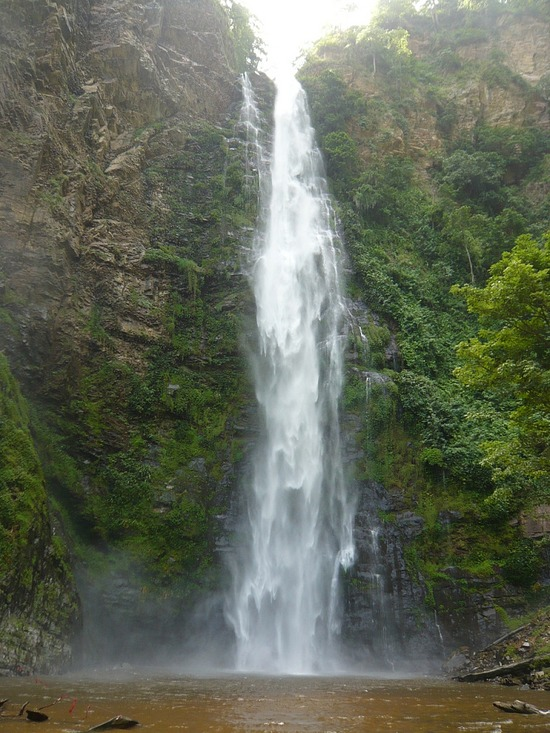
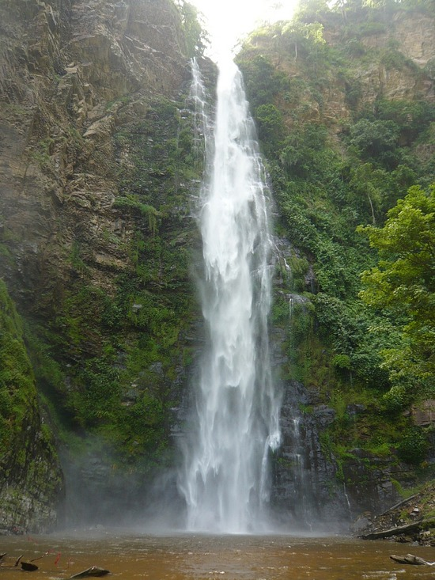

Roots Yard is situated right on the road to three of Ghana's top tourist attractions:
.JPG)

Tafi Atome Monkey Sanctuary
Afadjato, Ghana's Highest Mountain(885m [2903.54ft])
 

Wli Falls, The tallest waterfall in West Africa
It is possible to take a day trip to any of these beautiful sites by either Tro Tro or organise a Taxi from Peki for the day. Roots yard is the perfect base for exploring the beautiful area of the Volta Region
There are also a number of interesting Cultural and Historical things to see in and around Peki itself. Peki is Historically very influentual. The migration of the EWE from Dahomey (modern day Benin) in the 15th Century, due in part to the tyranical rule of King Agorkoli, the settlers in Peki empowered themselves as mediators between the ruling Akwamu and other EWE states and towns. Peki was also an important town linking the trade in enslaved people from the interior to the costal Slave Markets where they were exchanged for goods including salt. There are Caves in Peki where escaped slaves hid to evade re-capture.
It It is also possible to Bike or Walk to the Volta Lake side and take a canoe trip with local fishermen. There are numerous Guided walks through Butterfly littered, shaded forest or up the slopes of the Valley, past Cocoa farms, for a Stunning Lake View.
Peki Town itself is Simply laid out and very accesible for visitors to enjoy wandering without getting lost.
Peki is a very friendly and welcoming Town.
With the warm, sincere greetings you will recieve as you explore, we know you will feel at Home, experiencing both Traditional and Contempory Ghanaian Life.
Feel Welcome! -- Woe Zor
You have arrived